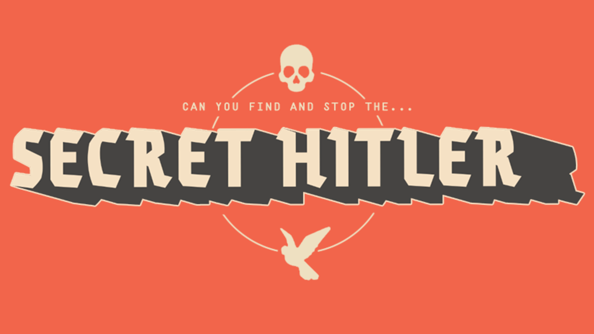
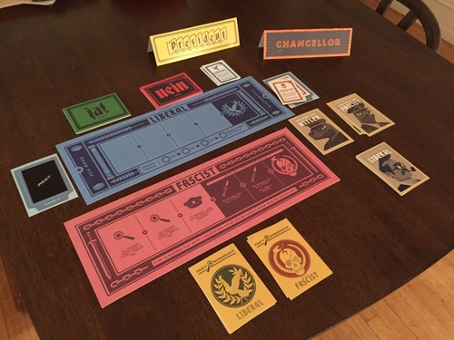

humanhybrids blog
BLOG POST #2
Secret Hitler, Session Report, and a Sunny San Jose Day
On a beautiful, sunny Friday afternoon in San Jose, California, I holed up inside a fluorescent lit classroom to play Secret Hitler with people I barely knew.
We intended to play more games that day but we had to play two games of Secret Hitler mainly because the first game was to learn how to defeat the fascist regime and the second game was played so we could enjoy it. The game was created in the 1930's in real life (sort of, not really) but the board game as we know it today was released in 2016 by Goat Wolf & Cabbage and Print & Play Productions. At the start of the game you are given a card that tell you your party affiliation and another card that tells you if you are a normal peace-loving liberal citizen, a secret fascist, or Hitler himself (the bad guy if you don't already know). The object of the game is to find and defeat the secret Hitler or to elect Hitler as Chancellor, if that's your thing. Check out our session report below to see how my game went.
Games Played: Secret Hitler
https://boardgamegeek.com/boardgame/188834/secret-hitlerMechanisms:
- Hidden Traitor
- Partnerships
- Player Elimination
- Voting
Session Report:
Players IRL:
- Rabin Gurung
- Emily Tran
- Kristie Cook (me)
- Christian Partida
- Matthew Young
- Jonny Dorais
Our second, more fun game begins.
- Matthew volunteered to start as President and Christian was nominated as Chancellor. A liberal card was placed down. Matthew said he threw out the fascist card leaving only liberal cards, Christian agrees.
- I, the next President, was then nominated as Chancellor by President Robin and voted in with majority vote. A liberal policy was enacted after I said I was given a fascist and liberal card. Robin said all of his policies were liberal. Hmmmmm.
- Emily, the new President, successfully nominated Christian as Chancellor. Emily claims to have given him a liberal and a fascist card to test him. Christian placed down a liberal card.
- As president, I nominated Jonny. I gave him two fascist cards. I was then able to investigate and interrogate Matthew who revealed himself to be a liberal (or so I claimed). Fascists have the upper hand.
- Matthew then was President. Emily was successfully nominated as Chancellor. He claims to have received two fascist cards and one liberal card. He discarded one and handed one of each to Emily. Emily chose liberal. This is the story they both said and we had to trust Matthew because he was outed as a liberal and therefore must be a reliable person.
- Jonny is President and nominated Emily as Chancellor. Because Emily has the trust of the people she won the majority vote easily. Jonny refused to answer which cards he was given and Emily put down a fascist card, claiming to be against her will. Hmm. Jonny has been awfully quiet the whole game. Fascists are still winning.
In the end, the liberals won. The fascists were close to winning. And it was revealed that Rabin was a fascist and that I was the secret Hitler.